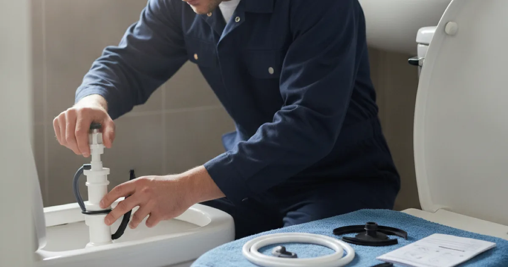

Toilet Repair in Westchester County, NY
A running, leaking, or clogged toilet wastes water and patience. Dan's Drains fixes toilet problems the same day so your bathroom is back to normal fast.
- Licensed & Insured
- Same-Day Service Available
- Upfront Pricing
- 15+ Years Local Experience

Need a plumber in Westchester County? We can usually help the same day.
Common Toilet Problems
Most toilet trouble falls into a few buckets:
- A toilet that keeps running long after a flush.
- A weak or incomplete flush.
- Water pooling at the base.
- A clog that will not clear with a plunger.
Each has a different cause, and a running toilet alone can waste a surprising amount of water every day.
What Causes Toilet Problems
A running toilet usually comes down to a worn flapper or fill valve. A leak at the base often means a failed wax ring. Weak flushing can be mineral buildup or a partial clog further down the line.
If the clog keeps returning, the real issue may be deeper — the kind of thing our drain snaking for stubborn clogs resolves.
Talk to a local Westchester County plumber today.
How We Repair a Toilet
We diagnose the specific problem and replace the worn part — flapper, fill valve, or wax ring — or clear the blockage. It is usually a quick, inexpensive fix once we know the cause.
If the toilet itself is cracked or worn out, we will discuss a straightforward replacement toilet set and sealed instead.
Repair or Replace?
Most toilet issues are simple repairs. Replacement makes sense when the bowl or tank is cracked, the toilet is very old and inefficient, or repairs keep stacking up.
A modern low-flow toilet can cut water use noticeably, as the EPA WaterSense toilet information explains, and we will give you an honest call on repair versus replace.
When to Call a Pro
Call us when a toilet keeps running, leaks at the base, or clogs repeatedly. A quick repair now prevents water waste and possible floor damage.
A base leak in particular is worth prompt attention before it causes hidden floor and subfloor damage.
Frequently Asked Questions
Why does my toilet keep running?
Usually a worn flapper or fill valve that is not sealing. It is an inexpensive repair, and worth doing quickly because a running toilet wastes a lot of water.
Water is leaking at the base — what is wrong?
That often means a failed wax ring or loose connection. It should be fixed promptly, since the water can damage the floor and subfloor beneath.
My toilet clogs constantly. Why?
Frequent clogs can mean a partial blockage further down the line or an older low-performing toilet. We find the cause instead of just plunging again.
Is it worth repairing an old toilet?
Often, yes, if it is basically sound. If it is cracked, very inefficient, or repeatedly failing, a modern replacement may be the better value.
Can you come the same day?
For many toilet repairs, yes. Call early and we will do our best to get it handled the same day.
Ready to book? Reach Dan’s Drains for fast, upfront plumbing help.